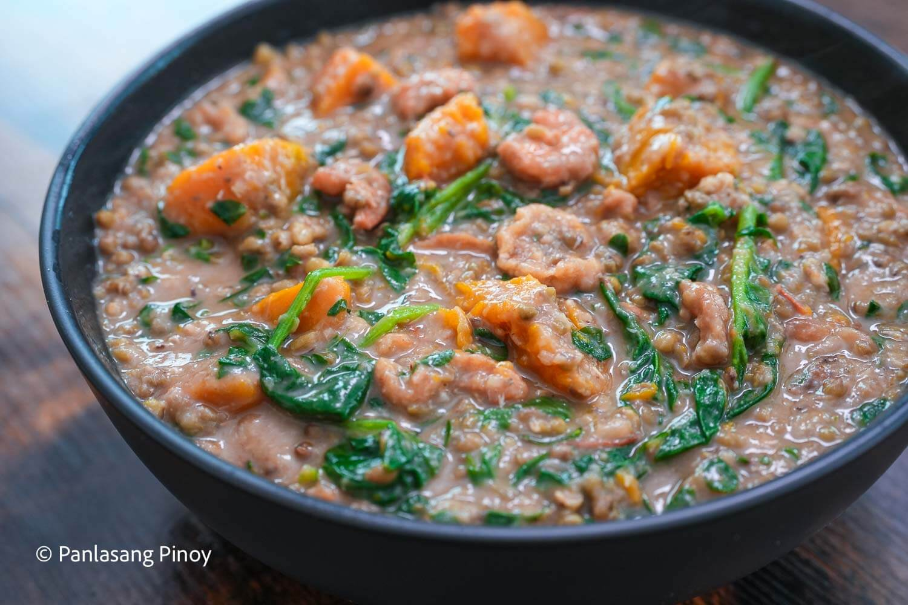

Ginisang Mongo Recipe
Monggo is one of those comforting dishes I grew up eating almost every week.
It’s simple, affordable, and has a way of filling both the stomach and the heart. On its own, it’s already satisfying—but add tender cubes of squash, a handful of fresh greens, and a topping of crispy
chicharon, and suddenly it turns into something extra special. Each spoonful is hearty yet balanced: the earthiness of mung beans, the sweetness of squash, and the crunch of chicharon all coming together.
It’s the kind of dish that instantly transports you home,
whether you’re enjoying it on a rainy afternoon in the Philippines or warming up on a chilly night abroad.

Ingredients
- 14 ounces mung beans
- 1 lb. calabaza squash cubed
- ¼ cup salted dried shrimp hibe
- 1 cup malunggay leaves
- 2 cups spinach
- 2 tomatoes diced
- 1 onion chopped
- 1 cup pork rinds chicharon
- 8 grams Maggi Magic Sarap
- 3 tablespoons fish sauce
- ¼ teaspoon ground black pepper
- 1 ½ quarts water
- 3 tablespoons cooking oil
How To Cook
- Soak the mung beans in about ½ quart of water overnight to soften them.
- Heat 3 tablespoons of cooking oil in a deep pot.
- Sauté the garlic until lightly browned, then add the onion and tomatoes. Cook until softened and aromatic.
- Stir in the dried shrimp and the soaked mung beans. Mix well to combine.
- Pour in the fish sauce and 1 quart of water. Cover and let simmer until the mung beans are completely soft and the soup becomes thick and hearty. Add more water if needed while cooking.
- Add the calabaza squash, cover again, and continue cooking until the squash turns tender.
- Mix in the malunggay leaves and spinach. Cook for about 1 minute, just enough to wilt the greens.
- Season with ground black pepper and a packet of Maggi Magic Sarap. Stir everything together. Finish it off with a generous topping of crispy chicharon.
- Serve hot alongside fried pork belly and steamed rice for a meal that’s as comforting as it is satisfying.
Tips & Tricks
- Soak the munggo overnight. This not only cuts down the cooking time but also gives the beans a softer, creamier texture.
- Add the squash later. Make sure the munggo is already tender before adding the squash so it stays firm and doesn’t turn into mush.
- Adjust the broth as needed. If the soup gets too thick while simmering, simply add a splash of water until you reach your preferred consistency.
- Top with chicharon at the end. For that satisfying crunch, add the crispy pork rinds just before serving and enjoy right away so they don’t get soggy.